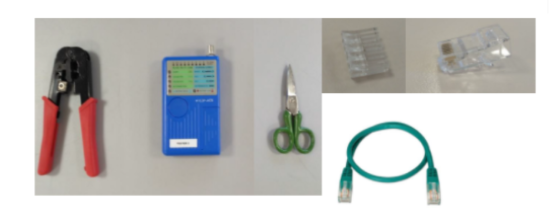
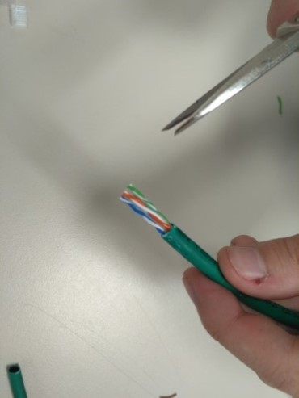
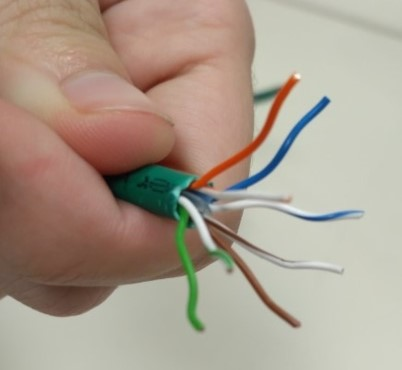
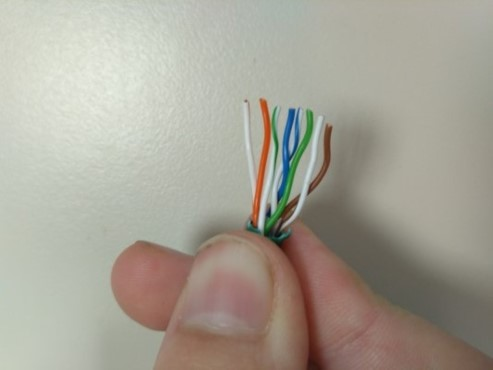
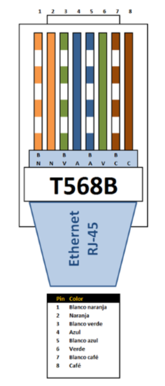
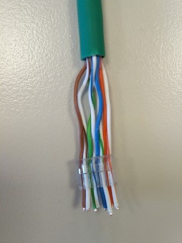
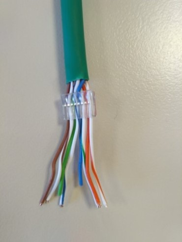
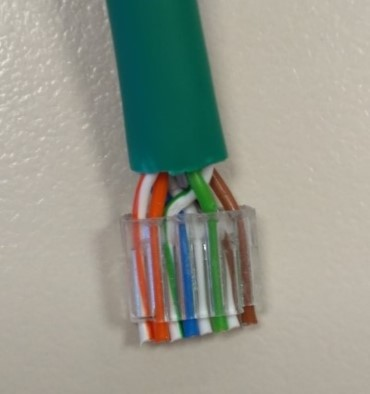
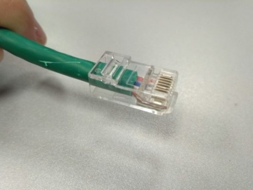
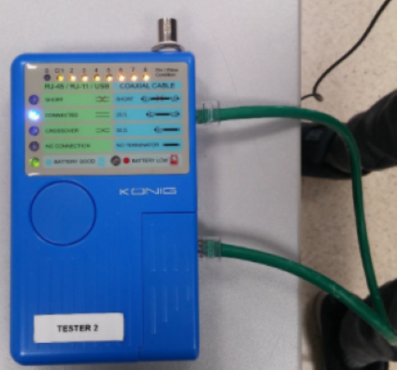

RJ-45 kablea eginten.
Tailerreko sarea testeatzea joan garenean, ikusi dugu “Connect” ematen zuela, baina 8tik bakarrik 7 puntu funtzionatzen zuten, horregatik,kablea aztertu ondoren, ikusi genuen RJ45 emeko kable bat gaizki zegoela.
Behin arazoa lokalizatuta zegoela, konpondu egin genuen RJ45 emea konponduz. Behin konprobaketa egin dugula, latigilo berri bat egin dugu, ordenagailutik rosetara joateko. Latigilo hau bi RJ45 arra edukiko ditu, ondorioz,
hurrengo materiala beharko dugu:

Lehenik eta behin cablea zurituko dugu

Ondoren kable bakoitza separatuko ditugu eta erdiko plastikitoa moztuko dugu

Behin kableak separatuta dauzkagula,
B eredua segituz, kableak ordenatuko
ditugu
 
Behin kableak ordenatuta, baina
Jarriko diogu.
 
Behein baina ondo jarrita, Sobratzen diren kableak moztuko ditugu

Kable moztu ondoren Rj-45 arran sartuko Dugu beheraino eta krinpadorekin krinpatu egingo dugu

KOMPROBAKETA
Bukatzeko testerrekin bi RJ-45 arrak sartuko ditugu eta botoiari sakatuko diogu dena ondo dagoela konprobatzeko

Azkenin gure ordenagailuan konektatu genuen eta koneksioa geneukala konprobatu genuen.
Ondorioak
Hasieran gaizki sartu genuen kablea eta berriz egin behar izan genuen. Baino azkenik ondo atera zitzaigun.
Behin lan-fisiko guztia bukatu genuela, SSH konprobaketa bat egitera jarri ginen, honetarako bi ekipo behar izan genituen, ondorioz, Egoi eta Xabier lankideekin egin genuen.
SSH
Lehenengo eta behin, ssh zerbitzaria eta bezeroa instalatu beharko dugu.
Gure kasuan gure ordenagailua zerbitzaria izango denez, hurrengo komandoak jarriko ditugu:
sudo apt-get install openssh-server
Behin instalatuta dagoela, piztu egingo dugu, horretarako:
sudo /etc/init.d/ssh start
Behin zerbitzaria instalatu dugula, bezeroa instalatuko dugu beste ekipoan, hurrengo komandoak jarrita:
sudo apt-get install openssh-client
Behin instalatu dugula, komandoa jarriko dugu ISO-a tansferitzeko:
scp /media/tellegoi/Datuak/ISO/Lubuntu.iso villarivan@192.168.1.201:/media/villarivan/Datuak
Jarraian gure ordenagailuko pasahitza jarriko dugu, eta tranferientzia hasiko da.

Behin prozesu guztia bukatu dugula, zerbitzaria itxiko dugu:
sudo /etc/init.d/ssh stop
Ordenagailuen arteko datu-trasmisioa
Jperf programarekin egin genuen. Lehenik eta behin bi ordenagailuak egindako
kablearekin konektatuko ditugu, ondoren Jperf programa bi ordenagailutan irikiko
ditugu eta batean server jarriko dugu eta bestean client.


Ondoren MB-tan jarriko dugu eta client-en beste ordenagailuaren IP-a jarriko dugu

Bukatzeko bi ordenagailutan run-eri hemango diogu eta abiadura ikusiko dugu gure kasuan 38MByte/s-koa zen